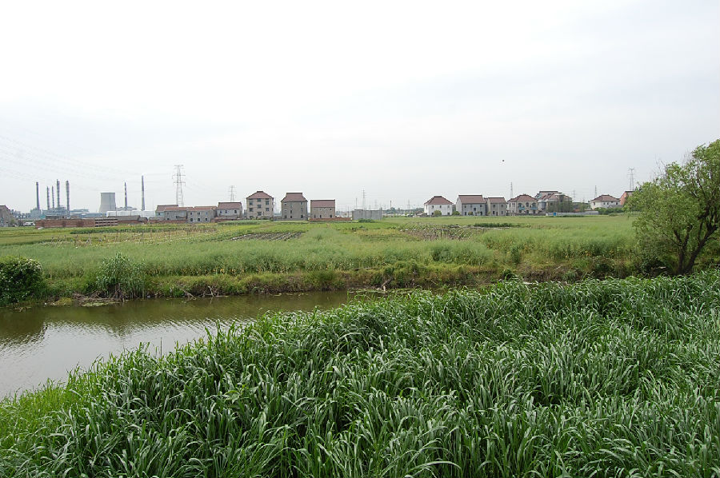

嘉兴市文物保护网 · 市级文物保护点 · 2020-11-09 · 原文

周家湾遗址位于嘉兴市南湖区大桥镇建国村周家湾自然村，东面紧靠何家塘河港，南、北、西三面与农田相连，面积约20000平方米，为新石器时代良渚文化晚期至春秋战国时期的古文化遗存。遗址分布在农田内，河港东西向流过，地势略低凹。出土陶片较多，还有石器发现。从陶片标本分析，以春秋战国时期印纹陶为主，其次为新石器时代良渚文化陶器。遗址具一定规模，延续时间较长，有较高的历史和科学价值。1992年公布为嘉兴市文物保护点。